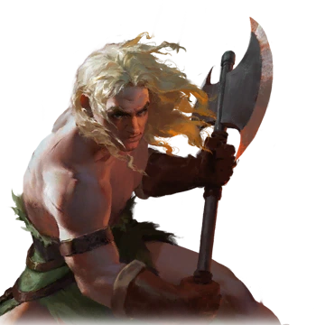
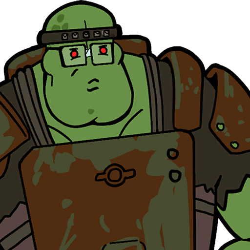
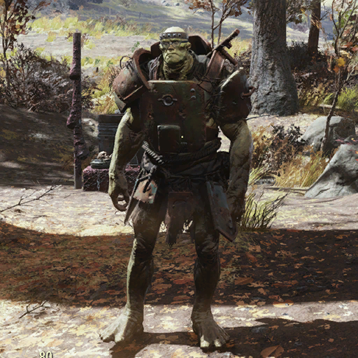
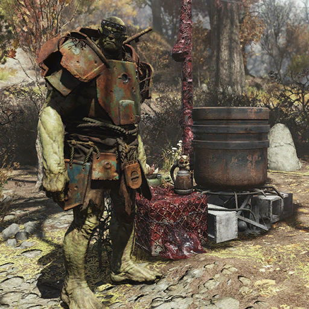
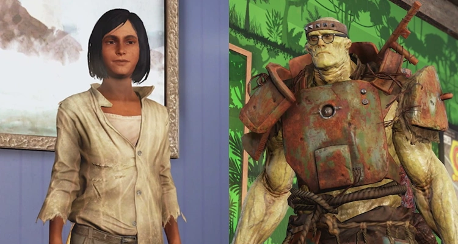
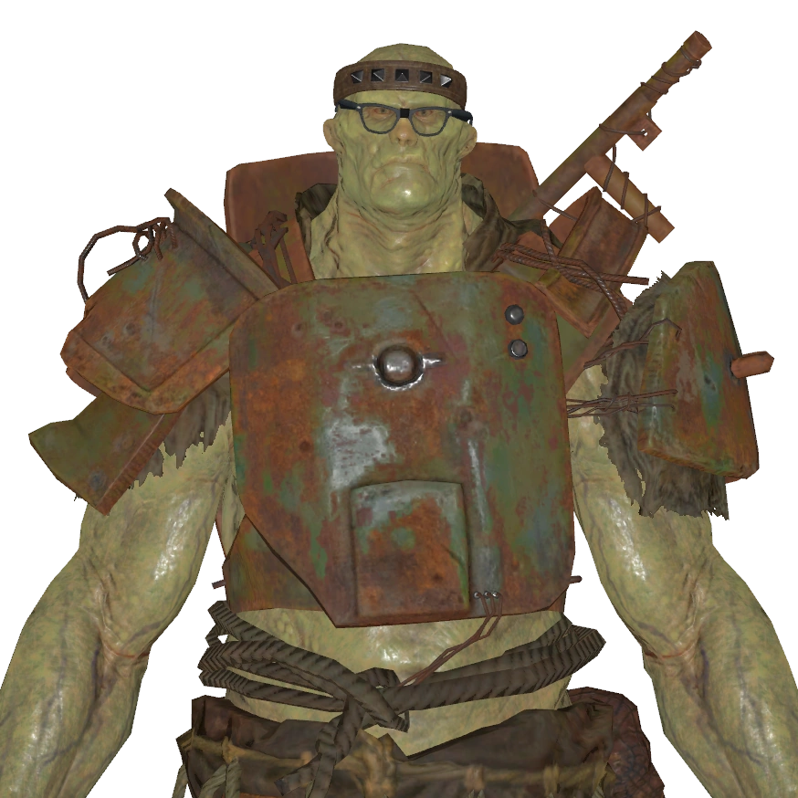

Maul
マウル — グログナックを倒すことを夢見るスーパーミュータント
でも人間の言う通りだ。
お前は強い。
グログナックより強いかもしれない。
人間が前に進めるなら、マウルにもできるかもしれない。」
概要
マウルはアパラチアに暮らすスーパーミュータントの同居人である。
Fallout 76の第6シーズン「The Unstoppables vs The Diabolicals」のランク50報酬として解放された。
後に「Night of the Moth」アップデートで設計図が追加され、購入可能となった。
背景

マウルは伝説のフィクションヒーローグログナックを探し出して倒そうとしているスーパーミュータントである。
自分の強さを証明するためにグログナックを殺したいと考えている。
「強い敵と戦う時は、その強さと弱さを知ることが大事だ。マウルはグログナックを知っている。だから殺せる」と語る。
マウルはグログナックが実在すると信じており、「アンストッパブルズ」のコミックを極めて真剣に受け止めている。
グログナックの本14冊、アンストッパブルズ5冊、ボードゲーム2つを所有し、「グログナック＆ルビーの廃墟」を2回クリアしたと自慢する。
マウルにはかつて「ブロッポ」という名の「バカな犬の友達」がいた。
檻の中で見つけた犬で、あまりにも弱々しくて殺すのが哀れで、食べるにも貧弱すぎた。
マウルは次第にこの犬と絆を深め、人間を殺して食べることをやめようとし始めた——ただしグログナックを殺すことだけは例外とした。
ブロッポが古い本を掘り出したことで、マウルはグログナック・ザ・バーバリアンの世界を知るようになった。
「マウルが人間を殺そうとすると、犬が邪魔をして人間の顔を舐めた」とマウルは語る。
「犬よ、人間は弱すぎて生きる価値がない。なぜ生かす？」と問いかけたが、ある日犬が掘り出した本——グログナックの本——を読んで、人間でも強くなれることを知った。
「スーパーミュータントより強くなれる。そしてグログナックにも犬がいた。名前はシルバーシュラウド」と。
しかし、ブロッポは他のスーパーミュータントたちに奪われてしまった。
マウルは怒り狂い、「グログナックがグログナロクになった時のように」正気を失い、盲目的な怒りでキャンプを襲撃し全員を殺した。
だが怒りが去った後、友を檻の中で死んだ状態で見つけた。
友を埋葬した時、マウルは自分が弱いことを悟った。
「グログナックは友を死なせない。でもマウルは死なせた」。
マウルはグログナックを倒せるほど強くなれば、友を守れるほど強くなれると信じている。
マウルはグラムのことを知っている。
「グラムもペットを飼っていて、食べない。マウルはこれが好きだ。すべての食べ物が胃に入るわけではない」と語る。
また、自由市場を信じており、「脱資本主義者はマウルを止められない」と主張する。
プレイヤーとのインタラクション
マウルはエッセンシャルNPCであり、同居人としてC.A.M.P.に配置できる。
専用家具は「マウルの大釜」。
アフィニティシステムを使用するが、ロマンスは不可。
ベンダーとして各種生肉、設計図、雑誌を販売する。
デイリーバフ：マウルのトレーニング
プレイヤーが睡眠で「十分に休息した」状態を達成すると、「マウルのトレーニング」パークが30分間適用される。
| 効果 | 詳細 |
|---|---|
| Strength +1 | 筋力が1ポイント上昇 |
| 放射線耐性 +20 | 放射能への耐性が向上 |
| 近接武器重量 -30% | 近接武器の重量が軽減 |
販売品
マウルはベンダーとして以下のカテゴリのアイテムを販売する。
- 基本生肉 ×8: ブラーミン肉、チキンモモ肉、イグアナの切れ端、ウサギの脚、リスの切れ端
- レア生肉 ×4: アングラー肉、ブラッドバグ肉、ヤドカリ肉、マイアラーク肉、ラッドスタッグ肉、狼の生肉、スティングウィング肉、ソフトシェル・マイアラーク肉
- ユニーク生肉 ×1: デスクロー肉、メガスロス肉、クイーン・マイアラーク肉、ヤオ・グアイ肉
- 設計図 ×1: 肉袋スタッシュボックス、ミートクリーバー、ミートフック、各種テンダライザーMOD
- アンストッパブルズ雑誌 ×2: グログナック・ザ・バーバリアン全10号、アンストッパブルズ全5号
- アンストッパブルズ！ボードゲーム ×1（70%確率）
装備
- スーパーミュータント・ヘビーアーマー
- キング・グログナック・ヘッドバンド
- 黒縁メガネ
- ボード / スレッジハンマー / スーパースレッジ
メモ
- マウルにはたくさんの犬がいる。全部いい犬で、全部が親友である。
- マウルはすぐ疲れる。「人間は弱い、でも数が多い。全部の人間を殺すのは大変だ」「マウルは全部殺す、でも明日にする。今日は休む」と語る。
- マウルから購入した雑誌はSCOREチャレンジやAtomチャレンジのカウント対象になる。
名言集
ギャラリー





スーパーミュータントなのにグログナックのコミックを全巻制覇し、ボードゲームまでクリアしているという設定が最高に笑えるし、それでいてグログナックが実在すると本気で信じているところが、なんとも純粋で可愛い。
でもこのキャラクターの本当の魅力は、犬のブロッポとの友情のエピソードにあると思います。
「弱すぎて殺すのが哀れ、食べるには貧弱すぎる」から始まった関係が、やがてマウルの価値観を根底から変えていく過程は、Falloutのロアの中でも屈指の感動エピソードですね。
ブロッポが他のスーパーミュータントに奪われて死んでしまった時、「グログナックは友を死なせない。でもマウルは死なせた」と自分の弱さを悟るシーンは、本当に胸が痛い。
スーパーミュータントの片言な語り口だからこそ、感情がストレートに伝わってくるんですよね。
「グログナックを殺せるほど強くなれば、友を守れるほど強くなれる」という論理は、めちゃくちゃマウルらしいし、同時に深い。
C.A.M.P.に配置するとグログナック関連の雑誌やボードゲームまで売ってくれるのも最高に嬉しい。
マウルは間違いなく、Fallout 76で最も心温まるキャラクターの一人です！
This article was created by translating and editing Maul from Nukapedia: The Fallout Wiki.
Licensed under the Creative Commons Attribution-Share Alike License (CC BY-SA 3.0).
コミュニティ維持のため、寄付を受け付けております。
> COMMENTS